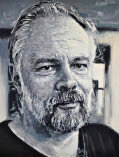

(1928 – 1982)

Sanatçıların genelde yaşarken değil de öldükten sonra değer kazandıklarına ilişkin yanlış bir düşünce vardır. Ancak bilimkurgunun gelmiş geçmiş en büyük yaratıcılarından biri olan Philip K. Dick için durum aynen böyle oldu. Yaşarken kitapları yayımlanan ve sevilen bir yazar olmasına rağmen pek tanınmayan Dick, roman ve öyküleri sinemaya uyarlanmaya başlayınca büyük bir ün kazandı.
Tam adı Philip Kindred Dick olan bilimkurgunun bu usta romancısı, kitaplarında Philip K. Dick (okunuşu: Filip Dik) adını kullanmıştır. Bazı kitaplarını da "Richard Phillips" ya da "Jack Dowland" takma adlarıyla yazmıştır. Hayranları tarafından kısaca PKD olarak adlandırılır.
16 Aralık 1928 günü Chicago'da, ikiz kız kardeşi Jane'le birlikte erken doğum sonucu dünyaya geldi. Babasının adı Edgar Dick, annesin adıysa Dorothy Kindred'dir. Yazar, annesinin soyadını kendisine ikinci ad olarak almıştı. İkiz kız kardeşi altı haftalıkken öldü ve anne-baba, Philip beş yaşındayken ayrıldı. İkizini altı haftalıkken kaybetmesi, Philip'in hayatı boyunca yaşadığı ilginç bir psikolojiye yol açtı. Bazı eleştirmenlere göre yazarın yapıtlarında yer alan gerçek/hayal, insan/android vb. tarzı ikilemler bu psikolojinin sonucudur.
Annesi Dorothy, boşandıktan sonra Berkeley'ye yerleşti ve Philip okul hayatının önemli bölümünü burada geçirdi. 1949'da bir süre California Üniversitesi'ne devam etti. Daha sonra da hayatının büyük bölümünü California'da geçirdi. Bir plakçı dükkanı işletmek ve radyoda klasik müzik programları yapmak dışında, başlıca uğraşı yazarlık oldu. Başta yükseklik korkusu olmak üzere çeşitli psikolojik sıkıntıları olan Philip'in, zaman zaman şizofren olduğu bile iddia edildi.
Yirmili yaşlara gelmeden klasik romanların tamamını okuyan Philip, 12 yaşında tanıştığı bilimkurguyu da bir daha hiç bırakmadı. 1950'li yılların başlarında genç yazar, yol göstericisi Anthony Boucher aracılığıyla ufak tefek bilimkurgu dergilerinde yazılar yayımlamaya başladı. 1954 yılında bilimkurgu yazarı A. E. van Vogt ile tanıştı ve bu yazar Philip'e roman yazarsa öykülerden daha fazla para kazanabileceğini söyleyince genç yazar da romana daha fazla zaman ayırmaya karar verdi.
İlk evliliğini 1948'de yapan Dick, sonraları dört kez daha evlendi ve iki kızı ile bir oğlu oldu. 1963 yılında yayımladığı Yüksek Şatodaki Adam adlı roman, II. Dünya Savaşı'nı Alman ve Japon ordularının kazandığı ve iki ülkenin birlikte ABD'yi işgal ettiği bir dünyada geçiyordu. Dick, bu romanıyla en saygın bilimkurgu ödüllerinden biri olan Hugo Ödülü'nü kazandı.
1974 yılında Philip K. Dick, doğrudan zihnine gönderilen pembe ışınlar aracılığıyla doğaüstü bazı deneyimler yaşadığını ileri sürdü ve sonraki yıllarda yazdıkları büyük oranda kendisine "söylenenler"le ilgili oldu. Kendisini bir peygamber gibi algılayanlar olduğu gibi anlattıklarının şarlatanlık olduğunu söyleyenler de vardı. Ancak Dick söyledikleri konusunda kesinlikle ısrarcı olmadı ve bu hayat dahil yaşadığımız her şeyin basit bir yanılsama olabileceğini iddia etti.
Ne yazık ki 2 Mart 1982'de kalp krizinden ölmeden önce fazla tanınmayan bir yazar olan Dick'in roman ve kısa öykülerinin bir kısmı ölümünden sonra senaryolaştırılıp film olarak büyük beğeni kazanmıştır. Bunlar arasında en ünlüleri, yönetmen Ridley Scott tarafından Blade Runner (Türkiye'de: Bıçak Sırtı) adıyla 1982 yılında çekilen Do Androids Dream of Electric Sheep? ve 1965 yılında yazdığı We Can Remember It for Your Wholesale öyküsünden yola çıkılarak yönetmen Paul Verhoeven tarafından çekilen 1990 yapımı Total Recall (Türkiye'de: Gerçeğe Çağrı) filmleridir. Her iki film, yapılmış en iyi bilimkurgu filmleri arasında yer almaktadır. PKD'nin 1956 yılında yazdığı The Minority Report (Türkiye'de: Azınlık Raporu) adlı öyküsü ise yönetmen Steven Spielberg tarafından 2002'de filme çekilmiştir.
Seçme Romanları: Uzayda Suikast (Okat Yayınları), Yaratılan Dünya (1957), Vulcan'ın Çekici (1953 – Metis Yayınları, 1997), Dr. Gelecek (1959 – Sarmal Yayınları, 1997), Mars'ta Zaman Kayması (1965 – Altıkırkbeş Yayınları, 2000), Gökteki Göz (1955 – Metis Yayınları, 1997), Çığrından Çıkmış Zaman (2007, Altıkırkbeş Yayınları), Karanlığı Taramak (1977 – Altıkırkbeş Yayınları, 1998), Yüksek Şatodaki Adam (1961 – Metis Yayınları, 1999), Alfa Ay'ının Kabileleri (2002, Metis Yayınları), Simulakra (1963 – Altıkırkbeş Yayınları, 2004), Ubik (Altıkırkbeş Yayınları); Timothy Archer (Altıkırkbeş Yayınları)